Run Design Case
This file (RunDesignCase) illustrates how to calculate mission parameters (mass, fuel and range) for a set of design missions defined by a target payload, target range and aircraft parameters. The climb performance parameters are also calculated.
The main file for running the Design Case is FindDesignPoint For brief description type: help FindDesignPoint
Created by: D Rezgui, S Mitchell and M Gibbons Copyright: University of Bristol
Contents
- Initialise aircraft parameters
- Calculate the mass, fuel and range for required mission
- Plot Mission Profile, Climb Performance results are also plotted
- Calculate the mass, fuel and range for a second mission with reduced required range
- Calculate the mass, fuel and range for a third mission with higher cruise altitude
- Save results
- Load saved data to workspace
Initialise aircraft parameters
delete Par; clear Par
clear; clc disp(' ') disp(' ******** Aircraft Performance Tool ********'); disp(' ******** Run Design Mission Set ********') disp([' ', datestr(clock)]); disp(' ') % Read Aircraft data from a re-defined file, e.g. 'AC_B777_AJenk'or 'AC_150C_twin' ParFunc = 'AC_B777_AJenk'; % or ParFunc = 'AC_150C_twin'; Par = eval(ParFunc); % Set parameters in the "Par" object, % Default values are set in the ParFunc disp(['... Aircraft parameters are set, based on ', ParFunc, ' data file']) disp(' ') % Reset parameters from default values (other parameters can be changed in % the Par object) Par.PL_req = 29050; % Required payload mass [kg] Par.Range_req = 4779; % Required design range [nm] % You can also reset the following parameters. (you can also change these parameters in the ParFunc file) % Par.S = 376.4; % Wing area [m^2] % Par.PLmax = 45000; % Max payload [kg] % Par.MFC = 80000; % Max Fuel capacity [kg] % Par.MTOM = 230000; % Max Take Off Mass [kg] % Par.Airframe = 130000; % Operating Mass Empty [kg] % Par.Alt_Cruise = 35000; % Cruise Alt [ft] % Par.DragRise = 0; % Flag to switch drag rise in the drag polar: 1 = Yes, 0 = No % Reset engine data parameters (if needed) Par.interp_method = 'linear'; % or 'spline' - 'spline' is slower but allows to extrapolate data Par.M_ext = []; % Extend Mach number range to M_ext - change to something like 0.1 if needed
******** Aircraft Performance Tool ********
******** Run Design Mission Set ********
20-Feb-2017 14:11:17
... Aircraft parameters are set, based on AC_B777_AJenk data file
Calculate the mass, fuel and range for required mission
Find mission mass, fuel and range for each mission phase Call function FindDesignPoint to calculate mission characteristics
dp(1) = FindDesignPoint(Par); % The calculated results of the mission elements are store in the object *dp*. % Display Mission elements Mission = dp.Mission % Display Mission phases Phase = dp.Mission.Phase
... Engine data prepared from UBB65Data
... Calculating the value of aircraft Take-Off Mass (TOM) for the required design case
Payload required : 29050 kg
Range required : 4779 nm
Cruise altitude : 35000 ft
Cruise Mach No. : 0.82
............................... Done
Elapsed time is 11.105289 seconds.
Calculate fuel burn for the required design case
.... Done
Elapsed time is 0.309745 seconds.
TOM for required the mission : 220234 kg
Block time for the mission : 636 minutes
Block fuel for the mission : 53193 kg
Reserve fuel for the mission : 8790 kg
Total fuel for the mission : 61830 kg
Mission =
Time: [1x16 double]
Range: [1x16 double]
Fuel: [1x16 double]
Mass: [1x16 double]
Phase: {16x1 cell}
Data: [1x1 struct]
Phase =
'01 | Start of taxi-out'
'02 | End of taxi-out / Start of take-off'
'03 | End of take-off / Start of climb'
'04 | End of climb / Start of cruise'
'05 | End of cruise / Start of descent'
'06 | End of descent / Start of approach'
'07 | End of approach / Start of taxi-in'
'08 | End of taxi-in'
'09 | Percentage policy reserves'
'10 | Continued cruise reserves'
'11 | End of overshoot / Start of climb'
'12 | End of climb / Start of cruise'
'13 | End of cruise / Start of descent'
'14 | End of descent / Start of hold'
'15 | End of hold / Start of approach'
'16 | End of diversion approach'
Plot Mission Profile, Climb Performance results are also plotted
PlotMission(dp(1).Mission) % Call plotter for mission profile
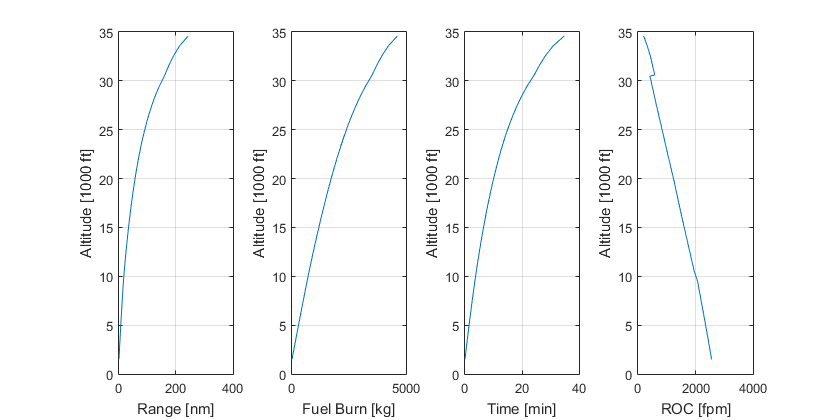 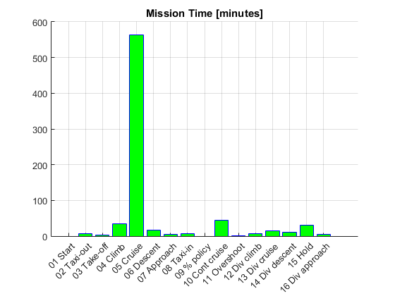 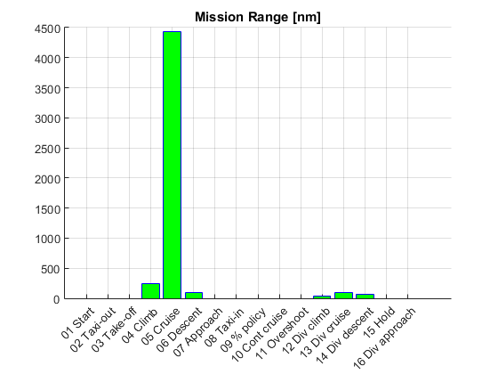 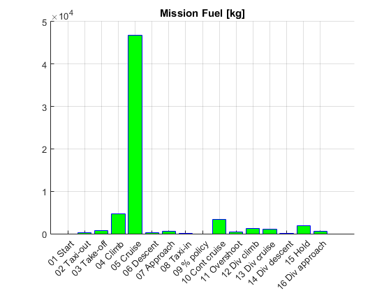 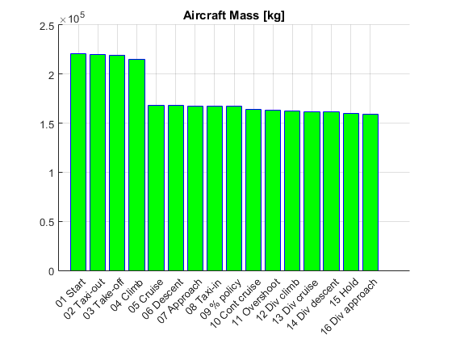 Calculate the mass, fuel and range for a second mission with reduced required range
Par.Range_req = 3000; % Required design range [nm] % Call function FindDesignPoint to calculate mission characteristics dp(2) = FindDesignPoint(Par); % The calculated results of the mission elements are store in the object *dp*. % Plot Mission Profile, Climb Performance results are also plotted PlotMission(dp(2).Mission) % Call plotter for mission profile
... Engine data prepared from UBB65Data ... Calculating the value of aircraft Take-Off Mass (TOM) for the required design case Payload required : 29050 kg Range required : 3000 nm Cruise altitude : 35000 ft Cruise Mach No. : 0.82 ............................... Done Elapsed time is 10.498190 seconds. Calculate fuel burn for the required design case .... Done Elapsed time is 0.316964 seconds. TOM for required the mission : 199871 kg Block time for the mission : 409 minutes Block fuel for the mission : 32829 kg Reserve fuel for the mission : 8790 kg Total fuel for the mission : 41466 kg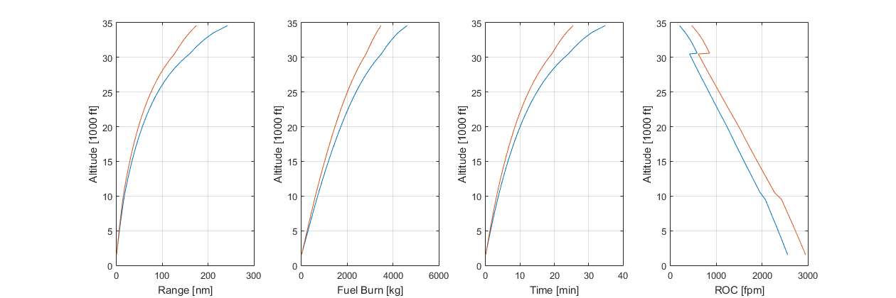 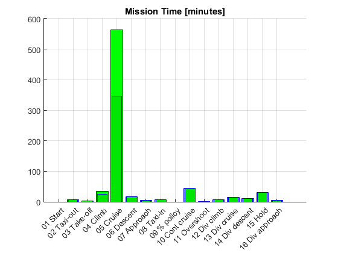 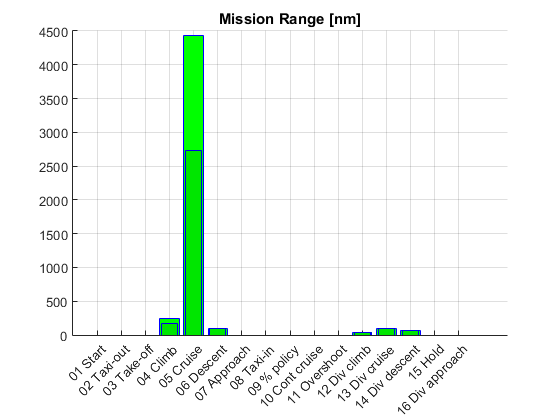 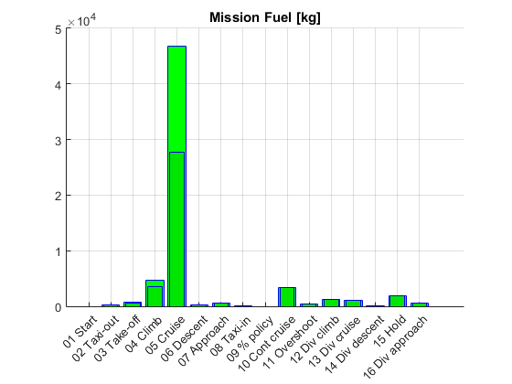
Calculate the mass, fuel and range for a third mission with higher cruise altitude
Par.Range_req = 4779; % Required design range [nm] Par.Alt_Cruise = 38000; % Cruise Alt [ft] % Call function FindDesignPoint to calculate mission characteristics dp(3) = FindDesignPoint(Par); % The calculated results of the mission elements are store in the object *dp*. % Plot Mission Profile, Climb Performance results are also plotted PlotMission(dp(3).Mission) % Call plotter for mission profile
... Engine data prepared from UBB65Data ... Calculating the value of aircraft Take-Off Mass (TOM) for the required design case Payload required : 29050 kg Range required : 4779 nm Cruise altitude : 38000 ft Cruise Mach No. : 0.82 .Warning: ... Altitude Ceiling reached for Mission Climb just below 37595 ft. The RoC this altitude is -11.9777 .Warning: ... Altitude Ceiling reached for Mission Climb just below 37595 ft. The RoC this altitude is -11.9777 .Warning: ... Altitude Ceiling reached for Mission Climb just below 37595 ft. The RoC this altitude is -11.98 .Warning: ... Altitude Ceiling reached for Mission Climb just below 37595 ft. The RoC this altitude is -11.98 .Warning: ... Altitude Ceiling reached for Mission Climb just below 37595 ft. The RoC this altitude is -11.9858 .Warning: ... Altitude Ceiling reached for Mission Climb just below 37595 ft. The RoC this altitude is -11.9858 .Warning: ... Altitude Ceiling reached for Mission Climb just below 37595 ft. The RoC this altitude is -12.0002 .Warning: ... Altitude Ceiling reached for Mission Climb just below 37595 ft. The RoC this altitude is -12.0002 .Warning: ... Altitude Ceiling reached for Mission Climb just below 37595 ft. The RoC this altitude is -12.0361 .Warning: ... Altitude Ceiling reached for Mission Climb just below 37595 ft. The RoC this altitude is -12.0361 .Warning: ... Altitude Ceiling reached for Mission Climb just below 37595 ft. The RoC this altitude is -12.1225 .Warning: ... Altitude Ceiling reached for Mission Climb just below 37595 ft. The RoC this altitude is -12.1225 .Warning: ... Altitude Ceiling reached for Mission Climb just below 37595 ft. The RoC this altitude is -12.3223 .Warning: ... Altitude Ceiling reached for Mission Climb just below 37595 ft. The RoC this altitude is -12.3223 .Warning: ... Altitude Ceiling reached for Mission Climb just below 37595 ft. The RoC this altitude is -12.7191 .Warning: ... Altitude Ceiling reached for Mission Climb just below 37595 ft. The RoC this altitude is -12.7191 .Warning: ... Altitude Ceiling reached for Mission Climb just below 37595 ft. The RoC this altitude is -106.4699 .Warning: ... Altitude Ceiling reached for Mission Climb just below 37595 ft. The RoC this altitude is -106.4699 .Warning: ... Altitude Ceiling reached for Mission Climb just below 37595 ft. The RoC this altitude is -109.4038 .Warning: ... Altitude Ceiling reached for Mission Climb just below 37595 ft. The RoC this altitude is -109.4038 .Warning: ... Altitude Ceiling reached for Mission Climb just below 37595 ft. The RoC this altitude is -130.2445 .Warning: ... Altitude Ceiling reached for Mission Climb just below 37595 ft. The RoC this altitude is -130.2446 .Warning: ... Altitude Ceiling reached for Mission Climb just below 36595 ft. The RoC this altitude is -13.8083 .Warning: ... Altitude Ceiling reached for Mission Climb just below 36595 ft. The RoC this altitude is -13.8084 .Warning: ... Altitude Ceiling reached for Mission Climb just below 36595 ft. The RoC this altitude is -13.8966 .Warning: ... Altitude Ceiling reached for Mission Climb just below 36595 ft. The RoC this altitude is -13.8967 .Warning: ... Altitude Ceiling reached for Mission Climb just below 36595 ft. The RoC this altitude is -13.8967 .Warning: ... Altitude Ceiling reached for Mission Climb just below 36595 ft. The RoC this altitude is -13.8967 ... Done Elapsed time is 12.217774 seconds. Calculate fuel burn for the required design case .Warning: ... Altitude Ceiling reached for Mission Climb just below 36595 ft. The RoC this altitude is -13.8967 ... Done Elapsed time is 0.326118 seconds. TOM for required the mission : 219717 kg Block time for the mission : 639 minutes Block fuel for the mission : 52812 kg Reserve fuel for the mission : 8653 kg Total fuel for the mission : 61313 kg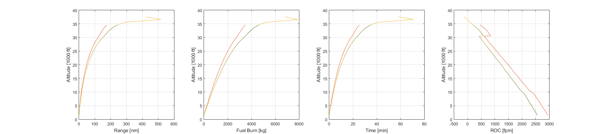 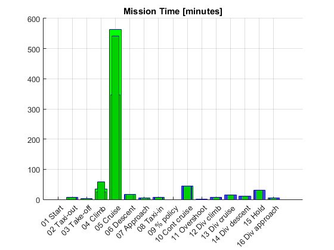 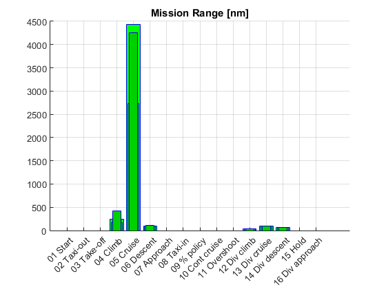 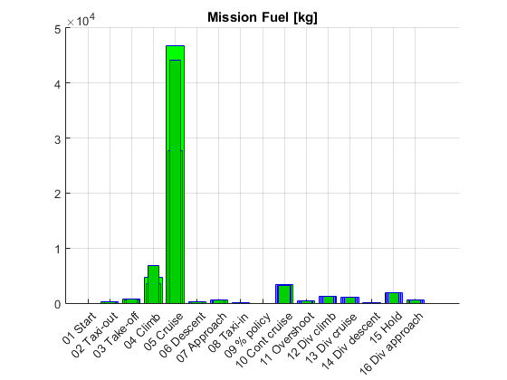 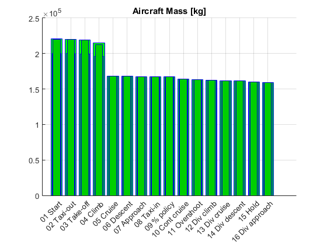
Save results
savefile = 'DPoint1.mat'; % You should change the name of this file for different cases save(savefile, 'dp');
Load saved data to workspace
delete Par;
clear % clear workspace load 'DPoint1.mat'; whos % show available variables in the workspace
Name Size Bytes Class Attributes dp 1x3 182822 designpoint